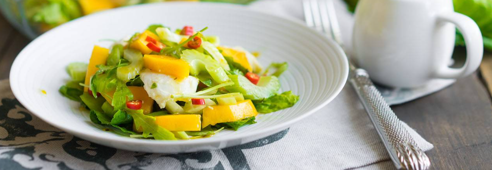
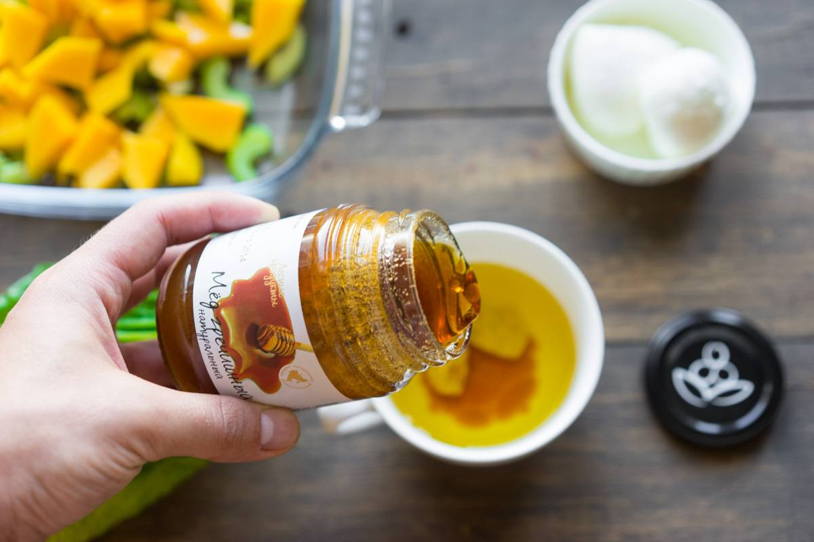
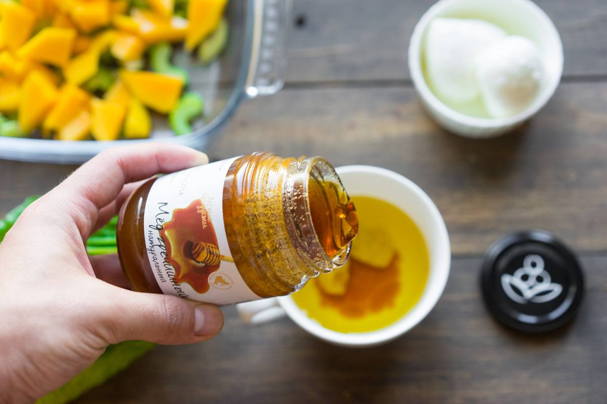
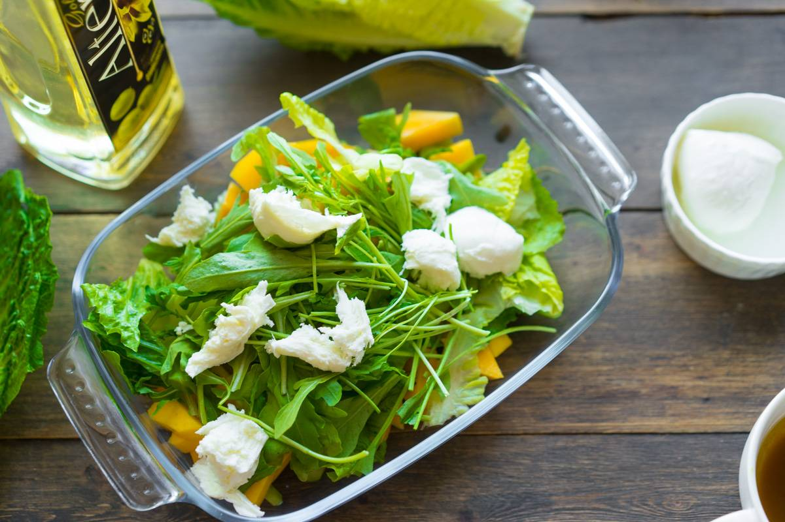
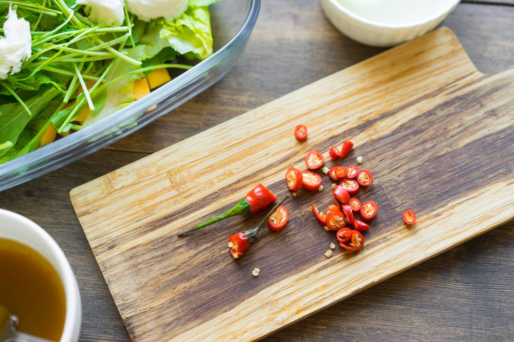

Salad with Mango and Mozzarella
One magazine asked me to make some summer salad. And I just decided to make one that is not in the establishments of my city. I collected my favorite ingredients (mango, arugula, celery), added a few accents and took my favorite dressing, it cooks quickly, and the ingredients are always in the refrigerator. It didn't turn out bad, so I'm sharing the recipe. The whole idea is that the salad is crystal perfect - there is a crunch, soft pieces, lots of greens and bright accents. At the same time, mango plays perfectly with dressing, and celery is my new favorite in general - I have a separate shelf for it in my refrigerator. Very summery, very bright and amazingly tasty.
Interesting: Celery is believed to induce good and pleasant dreams, all thanks to the presence of vitamins and minerals, which also calm the nervous system.

Celery (3 stalks) cut into thin slices diagonally. In doing so, we cut off the lower and upper parts. If the stems are too thick and seem harsh to you, peel them.

Mango (1 pc, not too soft), peeled in a convenient way, cut into thick cubes.

Prepare dressing from olive oil (50 g), mustard (5 g) and honey (20 g, buckwheat is better). Mixing the mass will be quite difficult, it is better to shake the ingredients in a closed jar. Special aesthetes can add a tablespoon of white wine vinegar or balsamic, it will be more noble.
 

Tear lettuce leaves into small pieces, add arugula. Mozzarella balls are also divided into several parts. Mix mango, celery and greens, season with the resulting sauce.
You can cut hot chili to add spice.
It is better to fill the salad just before serving, or even put a gravy boat nearby.